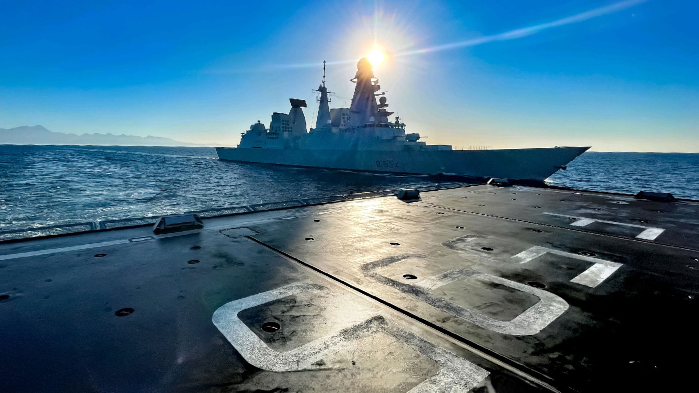
Unità di superficie
Prima Squadra Navale
Nucleo operativo per interventi e presenza in scenari marittimi complessi.
Componente navale
Presenza, competenza e capacità operativa sul mare. Esplora l’organizzazione, i comandi, le missioni e i gradi della Marina.
Identità e compiti
La Marina assicura capacità navali, anfibie e subacquee, contribuendo alla sicurezza marittima e alla tutela delle rotte strategiche. Uomini, mezzi e specialità operano in modo coordinato per garantire presenza e prontezza.
Tradizione, preparazione e tecnologia definiscono una struttura capace di affrontare scenari differenti, dal pattugliamento alla proiezione anfibia.
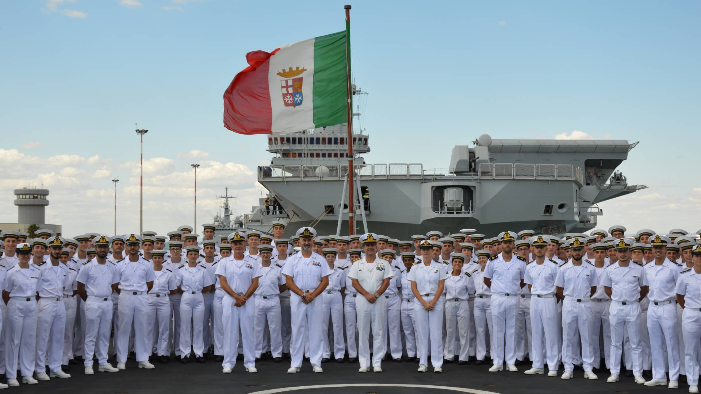
Struttura operativa
Quattro componenti con capacità complementari, dalle unità navali alle operazioni speciali e anfibie.

Nucleo operativo per interventi e presenza in scenari marittimi complessi.
Pattugliamento, controllo delle aree assegnate e supporto alle operazioni.
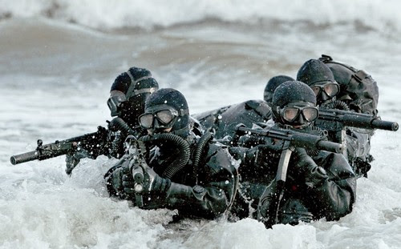
Componente subacquea e incursori per attività ad alta specializzazione.
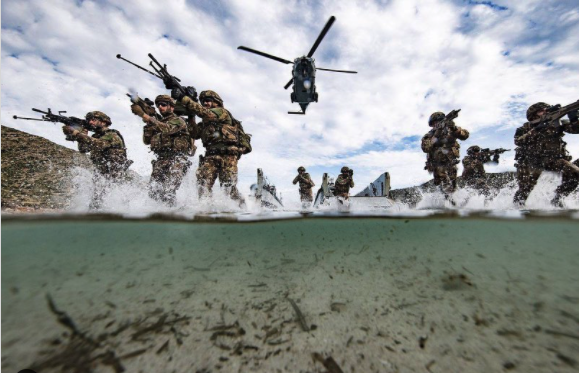
Forza da sbarco, protezione delle unità e supporto alle operazioni anfibie.
Attività sul campo
Scenari addestrativi e operativi che richiedono controllo, coordinamento e capacità di risposta.
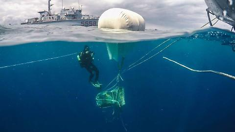
Pattugliamento marittimo, protezione delle rotte e controllo delle aree di interesse.
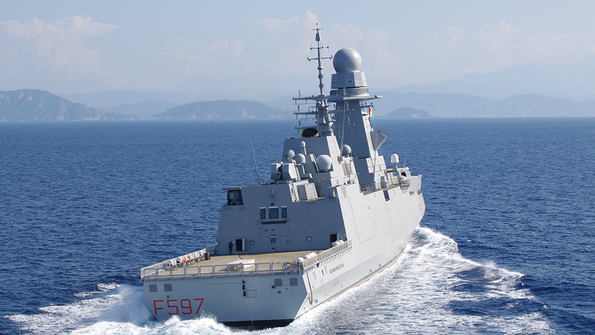
Presenza navale coordinata e attività di contrasto alle minacce sulle linee di navigazione.
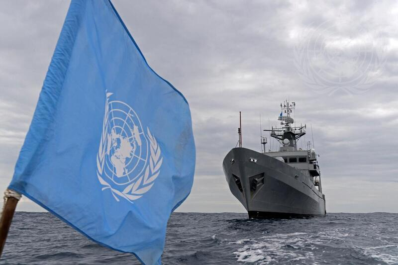
Supporto alla sicurezza marittima, monitoraggio e cooperazione tra unità navali.
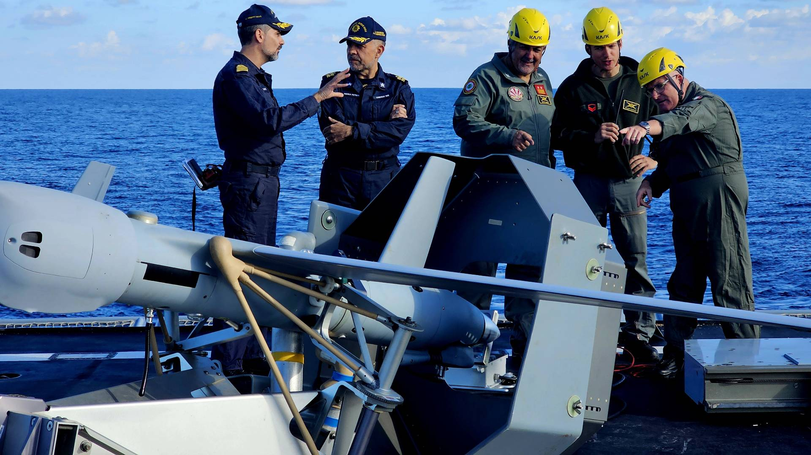
Esercitazioni congiunte per sviluppare manovra, comunicazioni e prontezza operativa.
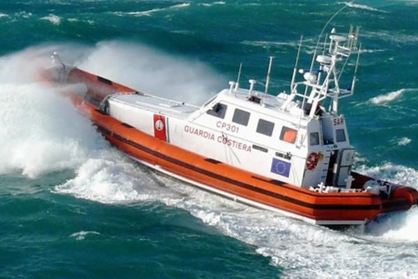
Ricognizione delle coste, presidio dei punti sensibili e supporto alle unità in mare.
Gerarchia
Gradi ordinati per categoria con distintivi uniformati nelle dimensioni e nella disposizione.
Unità navali
Alcune delle principali unità che rappresentano le diverse capacità della componente navale.
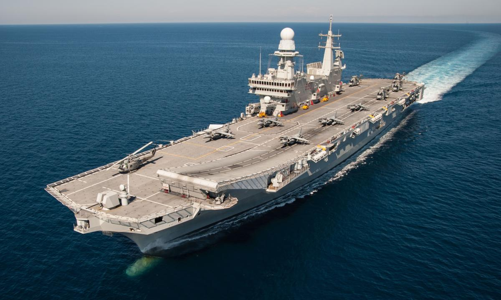
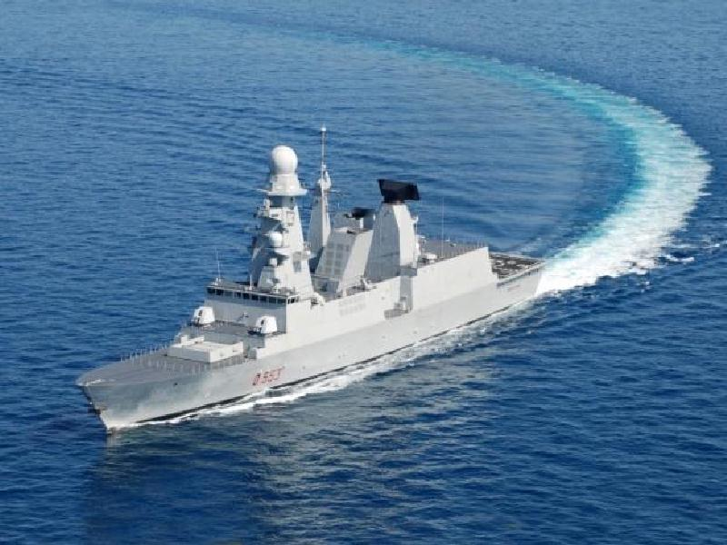
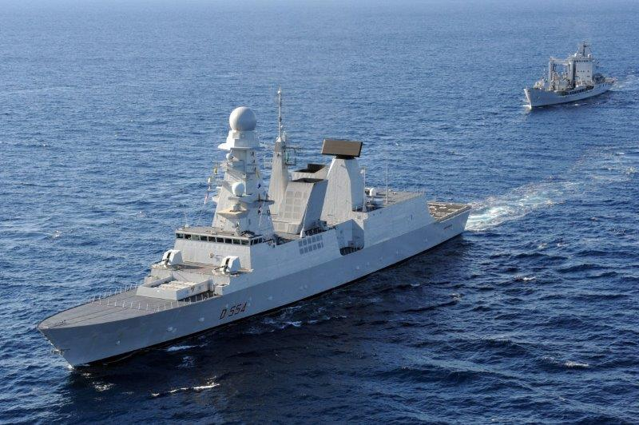
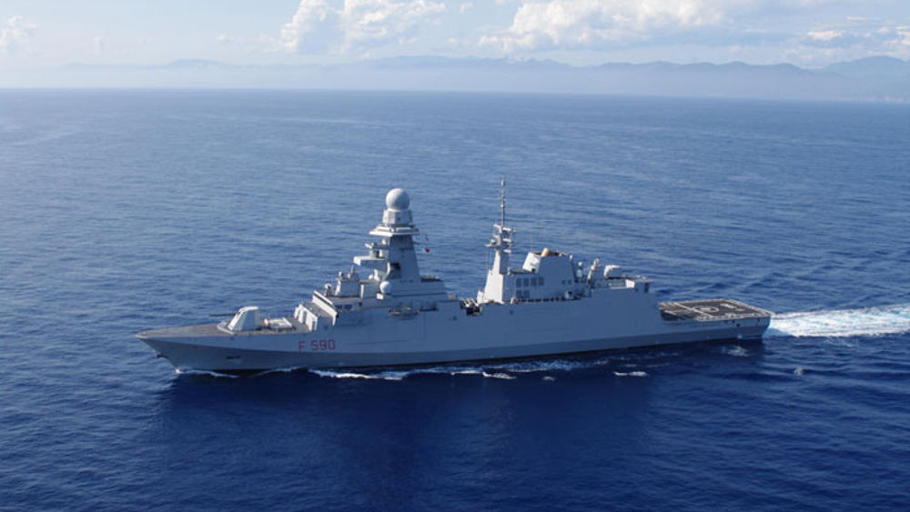